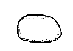
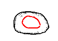
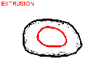
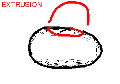
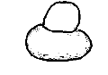
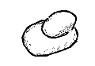
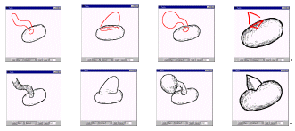

[1.Camera]
[2.Create]
[3.Paint]
[4.Extrude]
[5.Cut]
[6.Smooth]
[7.Bend]
[8.File]
Step 4: Extrusion
1
2
3
4
5
6
1) Create an object.
2) Draw a closed stroke within the object by left-button dragging.
(Leave a litte space between the start and end point of the stroke.)
3) The stroke is painted on the object's surface as a closed red line.
4) Rotate the model to bring the red stroke to its sideview.
5) Draw a stroke specifying the shape of the extrusion.
(Leave a litte space between the red line on the surface and the stroke.)
6) Rotate the model to see the result.

Example of various extrusions.
If you draw a closed stroke and do not want to extrude the surface,
a left-button click turns the red stroke into a black painted stroke.
When you have practiced enough, go to
step 5.
If the program works strangely, close the applet window and
restart the applet.
Copyright (C) 1998
Takeo Igarashi